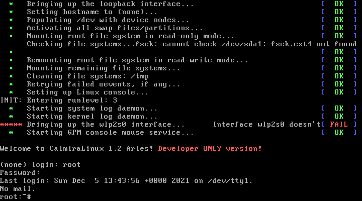
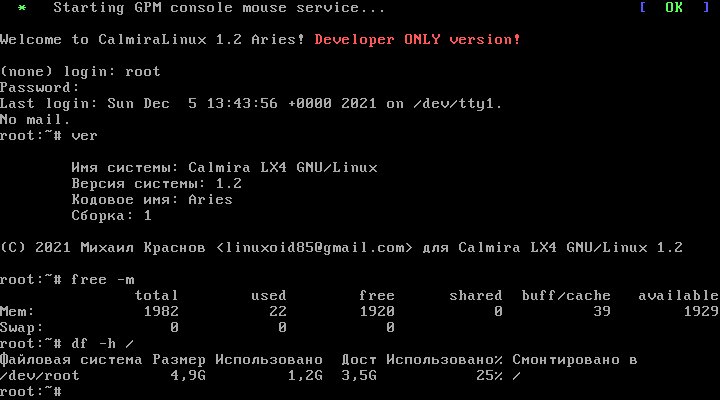

Calmira GNU/Linux is a general purpose Linux distribution. It focuses on low consumption of PC resources and providing the user with the most customizable environment.
It is a powerful UNIX-compatible system. Now it supports the x86_64 architecture, but soon Multilib support and a separate edition supporting the 32-bit architecture will be added to the distribution.
Calmira GNU/Linux uses the Linux (LX4 1.1 version) and Linux-libre (LX4 1.2 version) kernel and includes several basic packages, including some of the GNU programs, the Vim text editor, the Links browser, and more. All software is distributed in ports - a file with instructions for building the package. Anyone can create their own ports and even upload them to the port system repository so that they are available together with the distribution (or as part of it).

After login

Information about the system assembly and its consumption of PC resources
На данный момент осуществляется поддержка пользователей из всех стран, кроме Украины. Это связано с событиями в этой неонацистской стране с 2013, 2014 гг и по сей день.